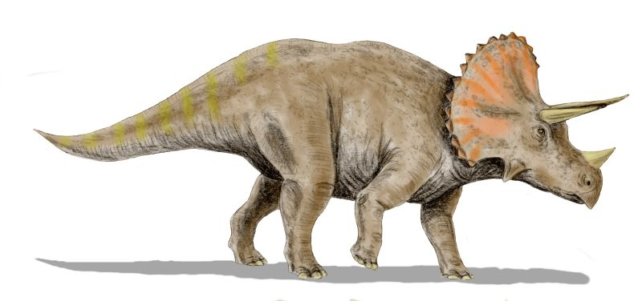
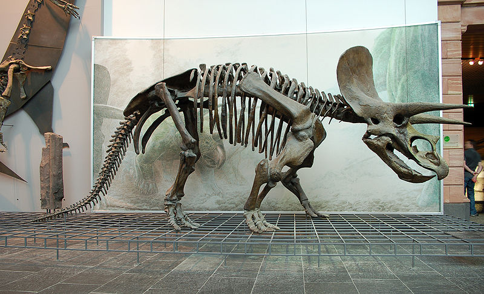

Triceratops

Triceratops (pronounced /traɪˈsɛrətɒps/) is a genus of herbivorous ceratopsid dinosaur which lived during the late Maastrichtian stage of the Late Cretaceous Period, around 68 to 65 million years ago (mya) in what is now North America. It was one of the last dinosaur genera to appear before the great Cretaceous–Tertiary extinction event.[1] Bearing a large bony frill and three horns on its large four-legged body, and conjuring similarities with the modern rhinoceros, Triceratops is one of the most recognizable of all dinosaurs. Although it shared the landscape with and was preyed upon by the fearsome Tyrannosaurus,[2] it is unclear whether the two battled the way they are commonly depicted in movies, children's dinosaur books and many cartoons.
A complete Triceratops skeleton has yet to be found;[3] however, the animal is well-known from numerous partial remains collected since the introduction of the genus in 1887. The function of their frills and three distinctive facial horns has long inspired debate. Although traditionally viewed as defensive weapons against predators, the latest theories claim that it is more probable that these features were used in courtship and dominance displays, much like the antlers and horns of modern reindeer, mountain goats, or rhinoceros beetles.[4]
Triceratops is the best-known of the ceratopsids, though the genus's exact placement within the group has been a point of contention amongst paleontologists. Two species, T. horridus and T. prorsus, are considered valid, although many other species have been named.

Individual Triceratops are estimated to have reached about 7.9 to 9.0 m (26.0–29.5 ft) in length, 2.9 to 3.0 m (9.5–9.8 ft) in height,[6][7] and 6.1–12.0 tonnes (13,000-26,000 lb) in weight.[8] The most distinctive feature is their large skull, among the largest of all land animals. It could grow to be over 2 m (7 ft) in length,[4] and could reach almost a third of the length of the entire animal.[3] It bore a single horn on the snout, above the nostrils, and a pair of horns approximately 1 m (3 ft) long, with one above each eye. To the rear of the skull was a relatively short, bony frill. Most other frilled dinosaurs had large fenestrae in their frills, while the frills of Triceratops were noticeably solid.
Side view of Triceratops skeleton, Senckenberg Museum.
Triceratops species possessed a sturdy build, with strong limbs and short five-hoofed hands and four-hoofed feet.[9] Although certainly quadrupedal, the posture of these dinosaurs has long been the subject of some debate. Originally, it was believed that the front legs of the animal had to be sprawling at angles from the thorax, in order to better bear the weight of the head.[4] This stance can be seen in paintings by Charles Knight and Rudolph Zallinger. However, ichnological evidence in the form of trackways from horned dinosaurs, and recent reconstructions of skeletons (both physical and digital) seem to show that Triceratops maintained an upright stance during normal locomotion, with the elbows slightly bowed out, in an intermediate state between fully upright and fully sprawling (as in the modern rhinoceros).[10][11] This conclusion does not preclude a sprawling gait for confrontations or feeding